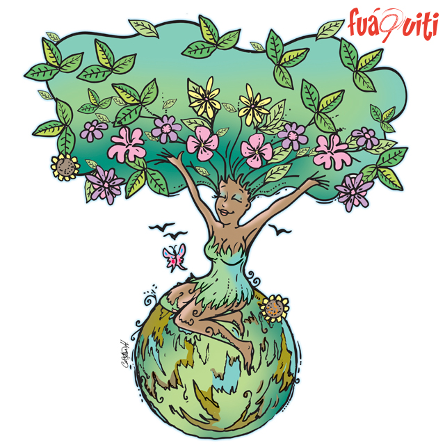

Dia Internacional de la madre Tierra 22 de abril


- 

Realizado por:
Mitzi Damian De Jesus
4"G"
Especialidad:
Programación
Submódulo
Desarrolla Aplicaciones Móviles
Docente:
Lic.José Antonio Gómez Hernandez
4"G"
Programación
Desarrolla Aplicaciones Móviles
Lic.José Antonio Gómez Hernandez
Celebramos el Día Internacional de la Madre Tierra para recordar que el planeta y sus ecosistemas nos dan la vida y el sustento.Con este día, asuimimos, además, la responsabilidad colectiva, como nos recordaba la Declaracion de Río de 1992, fomentar esta armonía con la naturaleza y la Madre Tierra. Este día nos brinda también la oportunidad de concienticiar a todos los habitantes del planeta tierra acerca de los problemas que adfectan a la tierra y a las formas de vida que en él se dasarrollan

Un poco en respuesta a esto, en 1970 se instituyó en Estados Unidos el Día Tierra, un año después de que se registrara un devastador derrame petrolero en las costas de Santa Bárbara, California, con la consecuente protesta de activistas y en especial un senador de la época, Gaylord Nelson, que en compañía de ciudadanos y organizaciones realizó una intensa campaña en pro de la protección del medio ambiente.

El domingo pasado 22 de abril se celebró el Día Internacional de la Madre Tierra, desde la CEDU participamos a través de la difusión y compromiso en la búsqueda de un justo equilibro entre las necesidades económicas, sociales y ambientales de las generaciones presentes y futuras, promoviendo una cultura armónica con la naturaleza y Madre Tierra.

La armonía con la naturaleza comprende el equilibrio o balance entre los seres humanos y la naturaleza (Coraggio J. L., 2011). En este caso, el Buen Vivir como vida plena trasciende la vida de los seres humanos e incluye y valora la vida de otros seres no humanos como animales y plantas. No obstante, si bien la naturaleza tiene valor intrínseco, no está desvinculada de los seres humanos que forman parte de ella.
La gestión integrada de paisajes requiere comprender los diferentes impactos del uso de la tierra y equilibrar los intereses a menudo contradictorios de los diferentes grupos involucrados. Imaginemos que usted forma parte del gobierno del país X en África subsahariana. Desea cumplir con el Objetivo de Desarrollo Sostenible No. 1 que reza: “acabar con la pobreza en todas sus formas en todas partes".